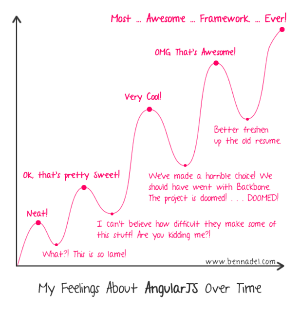

Angular JS
 por Luis Fletes
por Luis Fletes
Sobre Mi
Sobre el curso
Temas
- Introduccion
- Modulos y Controladores
- Filtros, Directivas y Fabricas
- Ruteo y Manejo de Vistas
- Formularios y $http
- Unit Testing
Requisitos
(Osea MVC, MVVM o MVP)
¿Qué es ?

Es la "A" del MEAN Stack
MongoDB, Express.js, AngularJS, NodeJSCompetencias
- Backbone
- Ember
- todomvc
- Knockout
- Polymer?
- React?
- Aurelia? (Antes Durandal)
- Spine
Fuente: Github

jQuery es una librería para Manipulación del DOM, Animaciones y Llamados AJAX. NO es un Framework de Aplicaciones
Pros
Angular hace todo lo que puede hacer JQuery (AJAX, Animaciones), sin embargo, JQuery es superior en cuanto a manipulación de DOM (En términos de simplicidad, no rendimiento)
Contras
- No es tan buena opcion para crear vistas dinámicas
- No es Organizado
- No es MVVM ni MVP ni MVC

Provee estructura para aplicaciones web. Modelos, Vistas, Plantillas, Ruteo e interacciones RESTfull
Pros
Mayor (en existencia), y por ende, mas "maduro".
Contras
- No es Full-Featured, es pensado que sea Light
- No sigue en desarrollo
- Depende de JQuery para Manipulación del DOM (No funciona sin JQuery de hecho)
Framework que provee MVVM Data Bindings usando observables y tracking de dependencias
Pros
Posiblemente mas eficiente
Contras
- Solo provee MVVM, no es mentado para aplicaciones
- Muy Tedioso con sus ko.observable() 's
- Tracking de depencias puede ser confuso

Framework amplio y completo para aplicaciones web
Pros
Similar a Angular en metas y objetivos
Contras
- Curva de aprendizaje, argumentablemente, mas tediosa
- Usa observables, objetos especiales, getters y setters de cadenas... no es dinamico
- Tracking de depencias puede ser confuso
- Ideal para WebApps Grandes
¿Por qué usar ?
( ͡° ͜ʖ ͡°)
- Excelente para sitios web dinámicos y aplicaciones (sobre todo las basadas en CRUD)
- Impone una estrucutra que es buena para organizar adecuadamente el código
- una vez que se entiende y domina, se desarrolla extremadamente rápido
- Fácil de Testear - Excelente para crear software que sea fácil de mantener
- Sin número de extensiones disponibles
- Framework #1 en su tipo (En nivel de uso y características)
- Tiene el respaldo de Google
- Amplia comunidad, documentacion, respuestas en StackOverflow, etc
Lo no tan bueno... :(
La curva de aprendizaje no es un paseo por el parque que digamos (╥_╥)
Angular 2?...

Arquitectura
LasMódulos
var app = angular.module("modulo", []);
Controladores
var app = angular.module("modulo", []);
app.controller("controlador", function($scope){
//Controller Logic
})
Filtros
var app = angular.module("modulo", []);
app.filter("filtro", function(){
return function(input){
return input + "1";
}
})
Directivas
var app = angular.module("modulo", []);
app.directive('directiva', function () {
return {
restrict: 'EA', //E = element, A = attribute, C = class, M = comment
scope: {
//@ reads the attribute value, = provides two-way binding, & works with functions
title: '@' },
template: '{{ myVal }}',
templateUrl: 'mytemplate.html',
controller: controllerFunction, //Embed a custom controller in the directive
link: function ($scope, element, attrs) { } //DOM manipulation
}
});
Fábricas y Servicios
Mas Aquí
var app = angular.module("modulo", []);
app.factory('testFactory', function(){
return {
sayHello: function(text){
return "Factory says \"Hello " + text + "\"";
},
sayGoodbye: function(text){
return "Factory says \"Goodbye " + text + "\"";
}
}
});
app.service('testService', function(){
this.sayHello= function(text){
return "Service says \"Hello " + text + "\"";
};
this.sayGoodbye = function(text){
return "Service says \"Goodbye " + text + "\"";
};
});
El MVC
Modelo
$scope.alumno = {
nombre: "Luis",
apellido: "Fletes",
edad: 22,
fortalezas: ["Angular", "Node", "MongoDB"]
};
Vista
{{ alumno.nombre +" "+alumno.apellido }}
{{ alumno.edad }}
{{fortaleza}}
Controlador
app.controller("control1", function($scope){
$scope.sendAlumno = function(){
// Logica aqui
};
});
¿Cómo lo obtengo?
- Descarga del Sitio
- CDN
- Bower
Orden
Esqueleto de una App

¿Solamente para la web?
¿y el back end?...
¿Cúando usar?
Versiones
Soporte de Navegadores
Herramientas
Sublime text
Se configura con paquetes de angular
VS Code
Viene listo con intellisense de angular
Web Storm
IDE con soporte para angular
Batarang y Ng-Inspector
Complementos para el explorador
Bower
Excelente manera de gestionar las dependencias